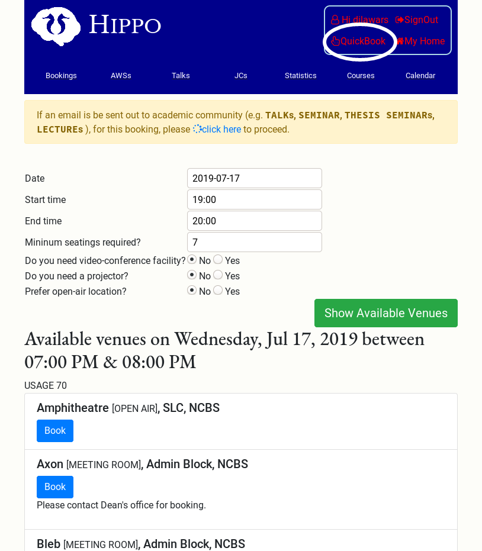
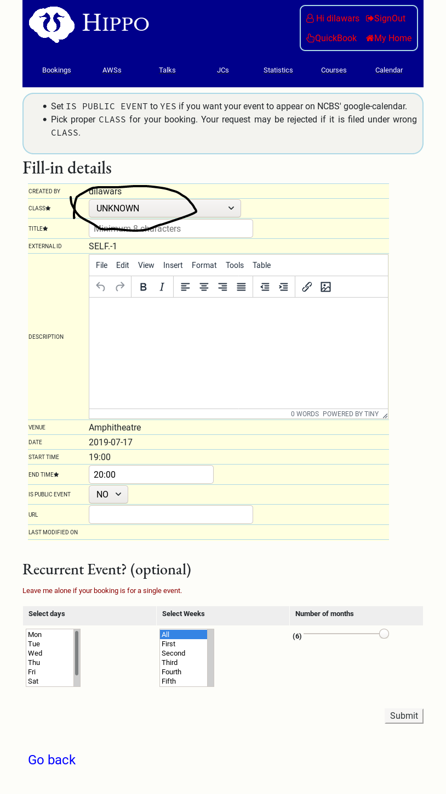
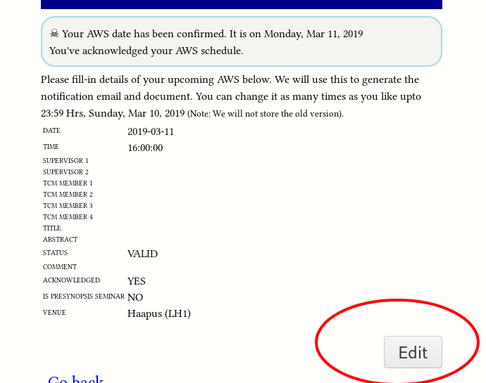
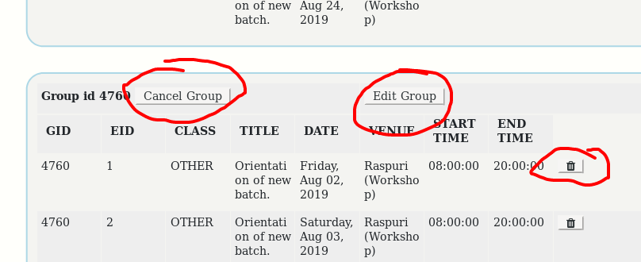

User Manual
This is a work in progress. If you find a mistake, feel free to edit the page.
What can I do?
FAQ
How to create a general booking request?
Click on QuickBook at the top-right corner of the page.
You will be asked for date, start time, and end time. And other optional information. Click on Show Available Venues to see the available venues.

To book your venue, press Book button below your venue. And you will be presented with a form.
Please make sure you fill it under the right CLASS (e.g. THESIS SEMINAR,
LAB MEETING, TALK etc.). Once a request is submitted, your slot/venue
is blocked and an email is sent your way.
Recurrent Event
To make recurrent booking (maximum for 6 months), select appropriate
days in select days list. To limit your booking to some weeks such
as first and third of every month, select those weeks (Hold down
Ctrl keys when selecting multiple entries.).
Don't worry, you can always delete your booking requests in case of error.

Emails in spam
If you are importing work emails into other email accounts such as gmail, please check your spam folder.
You will receive confirmation/rejection email after approval/disapproval. You will receive an email alert to renew your booking, 5 to 7 days in advance before your last event expires.
I need to change a confirmed booking (of a public Talks/Seminar)?
If the talk is already confirmed, then you need to contact academic admin or deans office to cancel it. If not, then you need to cancel pending request.
How do I upload my AWS abstract?
Click on My AWS link in your home page. If you cant’t find this link that means you are not eligible for AWS. Please contact academic office if you are (why would you be reading this otherwise!).

Click on it!
If you haven’t acknowledged the AWS schedule yet, you will see a button Acknowledge AWS. Click it. After acknowledging the AWS, you will see a table of your AWS entry. Press Edit button below it.

Clicking on Edit button will take to you a form. Fill it and Submit. Read the instructions at the top of the page. If you need help, do write to Academic Office.
After successful upload, you can see your abstract here. Select the appropriate date.
How do I book my thesis seminar?
See the item just below. While booking, select the talk CLASS to THESIS
SEMINAR.
How to book a public talk, lecture or seminar?
Info
Keep the photo and email id of speaker handy. You can continue without them but they are very useful for preparing documents. We strongly recommend that you arrange photo and email id of speaker. Email of speaker is never publicly displayed.
In your home page after login, click on Book for talk/seminar etc. (Academic Events) and fill details.
First section is for speaker, second is for talk. Third (optional) contains scheduling information.
If there is already some event on your selected date/venue, booking will be ignored but talk will be registered. You can schedule it later by visiting Manage my public events link. If the venue is available on chosen date and time, both talk and venue will be booked pending approval. After approval, you can see your event here.
It will also appear on calendar and emails will be sent to appropriate mailing lists at appropriate times. Morning 8am is the usual time when automatic email is sent.
Editing/updating/scheduling talks?
Go to your home page, and click on Manage my public events. You will see all upcoming talks registered by you. You can click on Edit button to edit the description and title. If it is not already scheduled, you can schedule it by clicking on Schedule button.
How to cancel or edit booking request/event?
To edit or cancel a request or a confirmed booking, click 'My Home' (on top right corner box) then on 'Manage My Private Events'.

All of your bookings should be visible on this page. To cancel a request or a confirmed booking, click on the button infront of a particular row. You can also modify/cancel the whole group (recurrent bookings).
